Paper Reading Notes · arXiv:2609.03430 · English quick-read edition
Random Attention: Rethinking KV Cache Eviction for Efficient Reasoning
Every KV cache evictor to date scores cached tokens by estimated future importance and keeps the top-scoring ones. This paper tests that premise directly and rejects it: keep the prompt, evict uniformly at random within each KV head, compute no score at all — and you match the strongest prior evictor across four models and six reasoning tasks while serving 32–43% higher throughput in vLLM. Two controlled experiments explain why: the prompt is the fragile part of the cache, and the reasoning trace protects itself with redundancy in the text and across attention heads.
Salesforce AI Research + UIUC (Heng Wang et al.)Paper: arXiv:2609.03430Code: GitHubFull Chinese deep-read: 中文精读版
Reasoning models generate chains of thought that run to tens of thousands of tokens, and the KV cache grows linearly with generation — a decode-phase memory bottleneck. The entire eviction literature shares one paradigm: score each cached token by how much it will matter later, keep the top-scoring ones. This paper shows the selection signal contributes almost nothing.
The method
Pin the prompt + random per headNo score, no calibration, no tuning: one rand and one topk per eviction
Accuracy (4 models × 6 tasks)
Significantly ahead in 31 of 60 cellsBehind in exactly one (32B code; traced to prompt length, not selection)
Throughput (vLLM, 32k gens)
+32–43% over the best baselineAnd 1.6–2.7× full attention, because no scoring pass ever runs
Cost per eviction round
0.30 msThe compaction floor; TriAttention pays 1.47–1.64 ms
Random Attention is deliberately both a deployable method and a null hypothesis: any signal-based selector that cannot beat uniform randomness at matched budget is not extracting usable information from its signal.
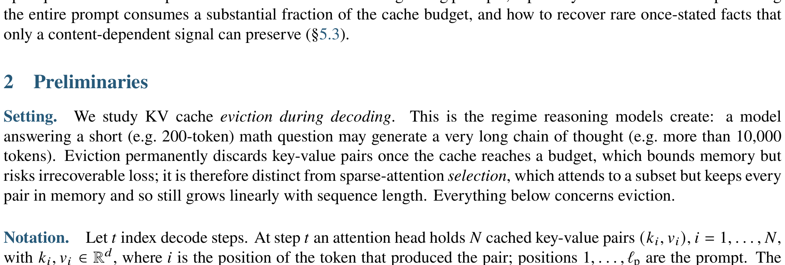
Figure 1:(a) Mean accuracy over the six reasoning tasks of Tables 1 and 5 at ∼4× compression: Random Attention matches the strongest prior evictor on every model (the small gaps to TriAttention at 14B and 32B are mostly driven by code reasoning, where long prompts consume the budget). (b) vLLM serving throughput at 32k-token generations; labels give Random Attention's multiple of full attention and its margin over TriAttention: with no scoring pass it serves 32–43% higher throughput.
Left: at ~4× compression the random policy (rightmost bars) is statistically indistinguishable from the best score-based evictor on all four models. Right: it serves 1.58×/2.23×/1.97×/2.67× full-attention throughput and beats TriAttention by +37%/+43%/+40%/+32% on identical kernels — the entire margin comes from never running a scoring pass.
💡 Click any image for the full-resolution original; click again or press Esc to close.
The one-sentence claim: an evictor's accuracy is decided by what it protects, not by how it ranks the rest. Once the irreplaceable prompt is safe, the trace's own redundancy keeps enough copies of what the model still needs — and the only thing a signal still buys is the rare fact stated once and never restated, which reasoning traces seldom produce.
02 · Preliminaries
Preliminaries: the eviction framework
The regime reasoning models create: a 200-token question triggers a 10,000+-token chain of thought, so the cache fills during decoding. Eviction discards pairs permanently once a budget is reached — memory-bounded, irrecoverable — and is therefore distinct from sparse-attention selection, which attends to a subset but keeps every pair (saves compute, not memory).
The decode-phase framework: a persistent per-head budget of $K$ pairs plus a buffer of the $r \ll K$ most recent pairs (never scored). Every $r$ steps the buffer fills and triggers an eviction over the candidate set $C_t$ (all cached positions outside the buffer):
The confound to remember: the last column. Methods differ in whether the prompt survives by rule or by score — TriAttention protects the whole input by default; SnapKV/R-KV/VaSE leave it to the score. Cross-paper accuracy comparisons therefore compare protection regimes as much as scores. §5 turns this into the key experiment.
03 · Method
Method: two structural choices, four lines
The intuition separates the irreplaceable input from the model-generated trace: the question is stated once and cannot be recovered if evicted; the trace revisits and restates its intermediates as generation proceeds. Protect the former; scatter the latter.
1. Protect the question. Positions $1,\ldots,\ell_p$ — the entire prefill (system prompt, chat template, question) — are never evicted.
2. Scatter the rest, per head. Every remaining position draws an i.i.d. uniform random score; each KV head independently keeps its top-$K$. The retained budget spreads evenly over the whole trace, differently in every head.
Algorithm 1 · Random Attention scoring (one eviction event; runs per layer)
1: s ← rand(B, Hkv, S) ▹ i.i.d. uniform score per cached position, per KV head
2: s[:, :, 0:ℓp] ← +∞ ▹ force-keep the question
3: keep ← topk(s, K) ▹ independent top-K per KV head
4: return keep
Per-eviction cost: one rand plus one topk. This is the weakest selection signal that can be written down — which is exactly the point. Note the policy is not age-blind in effect: a position surviving $n$ evictions had to win $n$ fresh draws, so survival is $\left(\frac{K-\ell_p}{K+r-\ell_p}\right)^n\approx 0.94^n$ at $K=1024$, $r=64$ — a soft recency window with a per-head long tail.
04 · Results
Results: the main grid
Setup. Qwen3-4B/14B/32B and Phi-4-reasoning across six tasks — MATH500 (500 problems), GPQA-Diamond (198), AIME 2025+2026 pooled (60), HMMT (60), LiveCodeBench-v6 medium (383, pass@1 by real test execution). Budgets at ~4× compression of each task's typical trace (~3× for LiveCodeBench): $K$ = 1024 / 2048 / 4096 / 4096 / 3072; 32k generation cap; official sampling settings with 2–16 independent runs per cell; every claimed margin gated by a paired, problem-clustered percentile bootstrap (95% CI) plus an exact sign test.
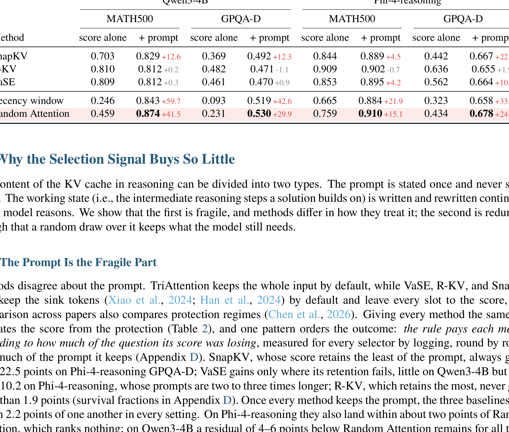
Table 1:Accuracy under KV cache eviction at each task's ∼4× compression (LiveCodeBench: ∼3×); the header gives each task's per-head KV budget K. Bold: best eviction method per column; grayed: significantly below Random Attention.
Reading the grid: on MATH500/GPQA-D the random policy significantly beats VaSE and SnapKV on every model (and R-KV on Qwen3-4B), and no selector is significantly above it. On competition math (AIME/HMMT, 16 runs per problem) SnapKV trails significantly everywhere; VaSE's nominal +1.7/+1.5 on 32B sits well inside a ±5-point run-to-run σ on 30 problems. LiveCodeBench is the one task with large gaps — SnapKV loses 20–35 points everywhere and VaSE collapses on Phi-4 (0.373) — explained below by prompt length, not selection quality.
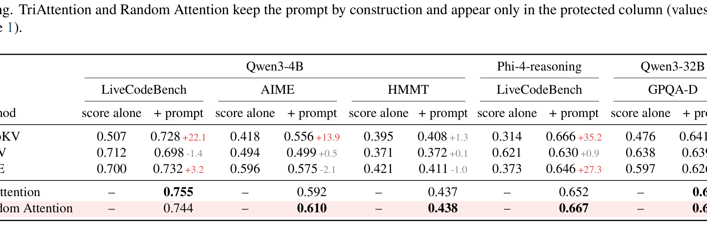
Table 5:Performance of Qwen3-14B with the same setting as in Table 1.
The 14B replication shows the same picture, with three cells where a baseline is significantly ahead: TriAttention on LiveCodeBench (+2.6, p=.007) and MATH500 (+2.1, p=.02), and VaSE on AIME (+2.6, p=.007) — consistent with their nominal edges at 32B. The code-task wins line up with the prompt-length account below.
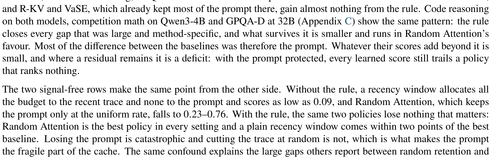
Figure 2:Accuracy from 2× to 16× compression on Qwen3-4B and Phi-4-reasoning, on the four math and science tasks; dashed lines mark full attention.
At 2× every method sits near full attention; as the budget tightens, Random Attention stays tied with TriAttention while the gap to VaSE opens on both families (e.g. Qwen3-4B MATH500 at 16×: 0.39 vs 0.09). Randomness does not fall apart under pressure. LiveCodeBench is excluded from the sweep — its prompts alone would not fit the small budgets.
Why code is different: prompts are six times longer. LiveCodeBench prompts average 557 tokens — six times MATH500 under the same tokenizer — and the longest consume up to half of the $K=3072$ budget. A selector that loses the prompt pays the most here (that is SnapKV's and VaSE's collapse); Random Attention pins every prompt token, so on code a large share of its budget is spent before selection begins. Much of a code prompt is scaffolding (I/O formats, harness instructions) that a smarter rule might compress rather than pin — left to future work, since the method's value as a null lies in having nothing to tune.
05 · Analysis
Analysis: why the signal buys so little
Cache content in reasoning splits into the prompt (stated once, never again) and the working state (intermediates written and rewritten continually). Two controlled experiments show the first is fragile — most of the gap between selectors is just whether their score kept the question — and the second is redundant enough that a random draw suffices.
The prompt is the fragile part
Give every method the same rule — keep the prompt — and the score separates from the protection:
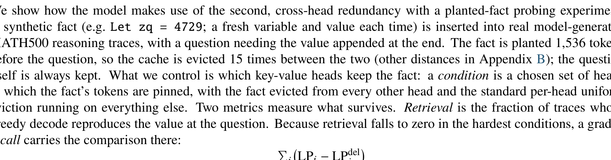
Table 2:Performance before and after protecting the prompt. R-KV never gains more than 1.9 points, SnapKV gains everywhere, VaSE gains materially only on Phi-4-reasoning.
The rule pays each method exactly what its score was losing of the question: SnapKV (which retains the least prompt) gains everywhere, up to +22.5 on Phi-4 GPQA-D; VaSE gains only where its retention fails (+4.2/+10.2 on Phi-4, whose prompts run 2–3× longer); R-KV, which already keeps most of it, never gains more than +1.9. After the rule the three baselines land within 2.2 points of one another in every setting. The two signal-free rows make the point from the other side: without the rule a recency window scores as low as 0.093 and Random Attention (prompt surviving only at the uniform rate) falls to 0.23–0.76; with the rule, Random Attention is the best policy in every setting and even a plain recency window comes within two points of the best baseline. Losing the prompt is catastrophic; cutting the trace at random is not.Table 6:Matched protection in the settings Table 2 does not cover (LiveCodeBench: pass@1; others: accuracy; AIME pools 2025+2026). Small numbers give the gain from the rule; bold marks the best protected method. TriAttention and Random Attention keep the prompt by construction and appear only in the protected column.
Across all fifteen protected settings the payoff follows the retention deficit (SnapKV's largest gain +35.2 on Phi-4 code; R-KV moves by −1.4 to +0.9, essentially zero), and protection closes the large method-specific gaps completely — SnapKV and VaSE become statistical ties with Random Attention on code for both models. What survives the rule is smaller and runs in Random Attention's favour: on 32B GPQA-D all three protected baselines remain 4–6 points below a policy that ranks nothing. Since TriAttention and Random Attention both keep the prompt by construction, every TriAttention-vs-Random-Attention cell of Table 1 was already a matched-protection comparison.
The working state protects itself: two levels of redundancy
The trace is stored redundantly in the text (the model restates what it is still using) and across heads (every KV head holds its own copy; eviction decides per head which copies die — a token is lost only when all heads drop it). A planted-fact probe quantifies the second level: a synthetic fact ("Let zq = 4729", fresh names each time) is inserted into real MATH500 traces 1,536 tokens before the question (15 evictions in between); the experiment controls which heads keep the fact, measured by greedy-decode retrieval and a graded recall
with $LP_i$ the log-probability of trace $i$'s correct value under the tested condition; $R=1$ means the surviving copies are worth as much as never evicting the fact, $R=0$ that they are worth nothing.
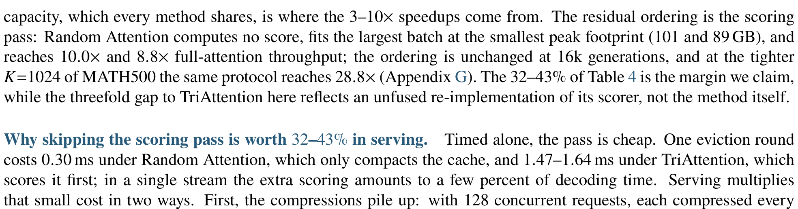
Figure 3:(a) A fact held in one head is almost never retrieved; held in several it is. (b) Two facts in different heads are worth more together than the sum of each alone (dashed). (c) Real MATH500: contiguous blocks cost nothing up to size 64; accuracy drops only once a head is left with 4 (K=1024) or 2 (K=512) blocks.
(a) Heads specialise — only 3 of Qwen3-4B's 8 KV heads retain a usable trace alone, and weakly (best single head 0.03, next 0.01) — but pooling is strongly superadditive: the same two heads together yield the fact in 60% of trials, three heads 83%, all eight 99%. (b) Pooling even crosses facts: two values held in different heads give R=0.31 together against 0.10 and 0.16 alone. (c) Shape does not matter: dealing the fact token-by-token across heads (no readable span) barely moves retrieval (0.33 vs 0.39) or recall (R=0.75 vs 0.76); on real traces, contiguous blocks from 1 to 64 tokens cost nothing and only block size 256 drops accuracy — because a head is left with just 4 (K=1024) or 2 (K=512) blocks. What matters is whether some usable copy survives somewhere — exactly what independent per-head draws maximise.
Shared-draw control: removing cross-head diversity (all heads share one random keep-set) costs nothing on real MATH500 traces — 0.871 vs 0.874 at K=1024, 0.788 vs 0.789 at K=512. Text-level redundancy already keeps a restated copy; the cross-head level carries what the text does not restate (the probe's regime). The two redundancies are substitutes, and Random Attention preserves both.
What is left for a selection signal: the fact stated once
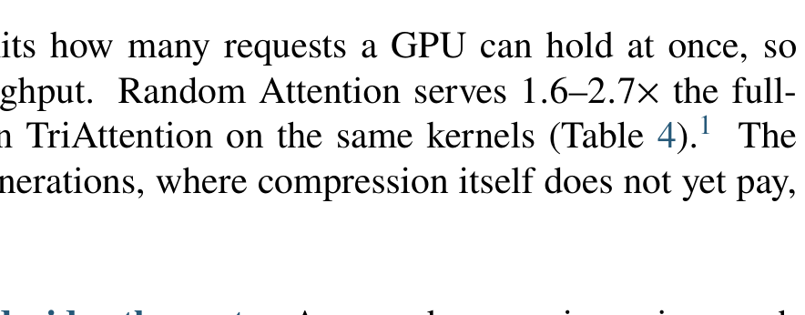
Table 3:A passcode stated once, 57 compression rounds before the question.
The one case a signal-free policy cannot cover. Retrieval tracks the statistic each signal scores by: R-KV, whose importance accumulates attention over the whole history, finds the passcode 84% of the time (log p −0.71); VaSE's attention-proportional sampling a third of the time; the recent-window signals of SnapKV and TriAttention almost never; Random Attention never (0.000, −18.35 — the passcode is effectively gone). Wang (2026) proves random caches must lose at pointer-chasing when nothing is redundant — needle-finding is real selection skill — but it neither implies nor follows from aggregate strength: the best needle-finder (R-KV) leads only one column of Table 1, and the strongest aggregate baseline (TriAttention) recovers almost nothing here. On real traces the case is rare, because the model keeps restating what it is still using.
The mechanism account: accuracy gaps ≈ prompt-protection regime + a small (often negative) residual selection effect; the trace's two-level redundancy makes random draws sufficient once the prompt is safe; the genuinely irreplaceable role of a signal — once-stated facts — exists but is rare in reasoning. That is the full story of "the signal buys almost nothing."
06 · Efficiency
Efficiency: what skipping the score is worth
Two settings: ① vLLM + PagedAttention (the TriAttention protocol and plugin, identical kernels and scheduler, only the selector swapped), and ② HuggingFace + FlashAttention-2, no paging, each method at the largest batch that fits the GPU.
Paged serving: +32–43% on the same kernels
One H200, $K=2048$, 1k-token prompts, 32k-token generations, 128 requests (Qwen3-32B capped at 96 — its 64 GB of weights shrink the KV pool; Phi-4 generates 31.5k within its 32k context). At 32k the cache, not compute, limits concurrency, so a smaller cache means more requests in flight:
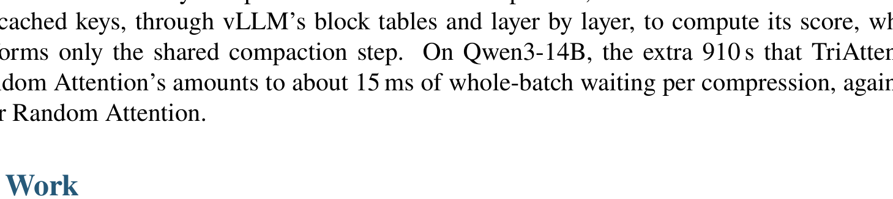
Table 4:Serving throughput (output tok/s, and the multiple of full attention) under vLLM with PagedAttention on one H200 (K=2048, 1k-token prompts, 32k-token generations).
Random Attention serves 2046 / 1737 / 1819 / 923 tok/s — 1.58× / 2.23× / 1.97× / 2.67× full attention, and +37% / +43% / +40% / +32% over TriAttention on identical kernels. The margin is not specific to this operating point: it holds at 8k short generations (+35–42%), at the capacity ceiling (+41/+42%), while at a single request the two methods differ by ~1% (115.8 vs 117.0 s) — the serving margin is the barrier-multiplied cost of reading paged cache state, not a kernel-time gap.
Why the scoring pass costs 32–43% in serving
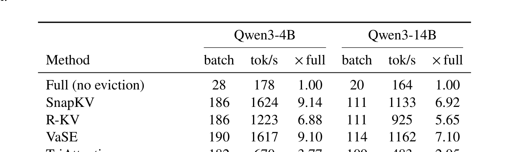
Table 9:Cost of one eviction round (scoring + compaction), measured with CUDA events on an otherwise idle H200: K=1024, 4096 decode steps, single stream. Random Attention performs no scoring, so its round time is the compaction floor every evictor pays.
Per-round ladder: Random Attention 0.30 ms (the compaction floor), SnapKV 0.37, R-KV 0.58, VaSE 0.74, TriAttention 1.47–1.64 ms — the excess over the floor is the price of the selection signal. Ordering and per-call costs are unchanged across a 3.5× change in model size (within 12%).
Compressions pile up at barriers. 128 concurrent requests, each compressed every 64 of its own tokens → about 62,000 compressions per workload, each executed at a synchronisation point between batched steps: while one request is compressed, all 128 wait. On Qwen3-14B, TriAttention's extra 910 s over a 32k run amounts to ~15 ms of whole-batch waiting per compression, against well under a millisecond for Random Attention.
Paged serving makes content-dependent scores expensive. Fused kernels never materialise attention weights, so weight-reading scores (SnapKV, R-KV, VaSE's fill) must recompute a windowed query-key product; cache-reading scores (VaSE's value range, TriAttention's key statistics) still need gathers across block tables, layer by layer. Random Attention reads nothing: its keep-set is a random permutation of slot indices, so the runtime's existing compaction path is the whole integration — adding it to TriAttention's plugin took a single function (R-KV's released port spans ~849 lines of wiring across 13 files).
Equal memory: everyone banks the capacity win; the ordering follows the scoring pass
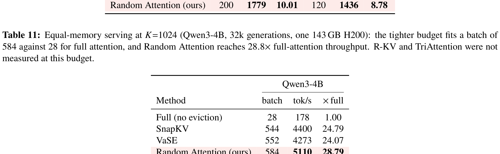
Figure 5:Equal-memory serving: decode throughput relative to full attention at each method's largest batch on one H200 (K=3072, 32k generations). ∗TriAttention here is an unfused re-implementation of its scorer, far slower than the vLLM version.
Full attention fits only 28 (4B) / 20 (14B) concurrent sequences; compressed caches fit 109–200 — that shared capacity is where the 3–10× speedups come from. The residual ordering follows scoring cost: Random Attention 10.0× (batch 200) / 8.8× (batch 120) on top, SnapKV and VaSE ~9.1×, R-KV 6.9×/5.7×. The TriAttention bar (starred) is the authors' unfused PyTorch re-implementation, far slower than their released kernels — on vLLM the gap to Random Attention is 1.4×, not 2.7–3.0×; the method-level claim therefore rests on Table 4.
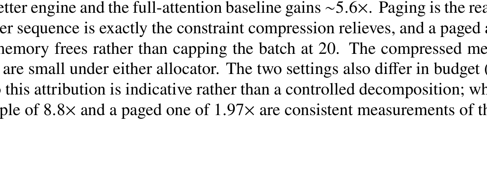
Table 10:Serving throughput when each method runs at the largest batch that fits one 143 GB H200, at K=3072 with 32k generations. The small cache is what buys the batch, so every evictor collects most of the win; the ordering among them follows the cost of their scoring pass.
Exact numbers: full attention 178 / 164 tok/s at batch 28 / 20; Random Attention reaches 1779 / 1436 tok/s (10.01× / 8.78×) at the largest batches (200 / 120) and the smallest peak footprint (101 and 89 GB). Same-code-path baselines: SnapKV 1624, VaSE 1617, R-KV 1223 on 4B. Ordering unchanged at 16k generations.
At the tighter MATH500 budget $K=1024$ the same protocol fits 544–584 sequences against 28, and Random Attention reaches 28.8× full-attention throughput (5110 tok/s) — 16% above SnapKV and 20% above VaSE at their own largest batches:
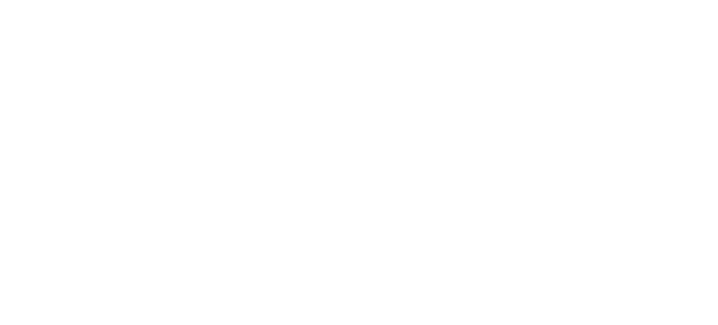
Table 11:Equal-memory serving at K=1024 (Qwen3-4B, 32k generations, one 143 GB H200): the tighter budget fits a batch of 584 against 28 for full attention, and Random Attention reaches 28.8× full-attention throughput.
The capacity multiple grows as the budget shrinks: batch 584 vs 28, 5110 tok/s = 28.79× full attention. The no-score advantage takes its extra slice at every budget. R-KV and TriAttention were not measured at this budget.
Two tooling pitfalls the authors recorded (worth copying into your own benchmarking checklist): ① vLLM's own throughput benchmark ignores the requested output length — its default 128-token outputs never reach the compression threshold, so it silently times full-attention decoding; ② the integration's deduplication guard can disable all later compaction after one benign under-budget round. Both were fixed with bookkeeping-only changes, and every reported run is verified by its applied-event counters.
07 · Diagnostics
Diagnostics: keep-logs, lengths, variance
The retention numbers of §5 come from logging every eviction round of real runs: 19 policy–cell logs, 16 traces each, 104–105 rounds per log, recording each (layer, KV head) keep-set with the age of every retained position. Slot coverage (fraction of candidates retained by at least one head): 0.999–1.000 for Random Attention and VaSE, 0.993 for TriAttention, 0.938 for the shared-draw control. Prompt survival (union / per head): 0.994–0.999 and identical per head for Random Attention, vs 0.55–0.91 / 0.26–0.67 for R-KV, 0.56–0.70 / 0.20–0.29 for VaSE, and 0.32–0.42 / 0.11–0.22 for SnapKV — the lowest in every setting. By age:
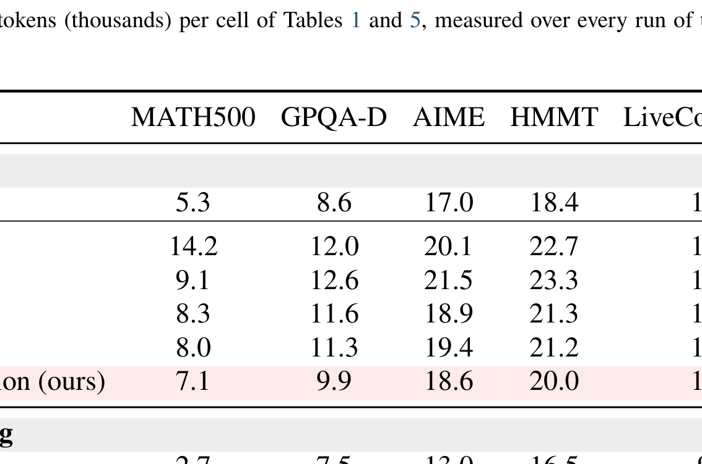
Figure 4:Fraction of positions of a given age that a head still holds (log scale; Qwen3-4B MATH500, K=1024). Random Attention decays geometrically with age; VaSE concentrates and freezes a tail of old favourites; TriAttention spends almost uniformly across ages.
Three budget shapes: Random Attention decays geometrically (a soft recency window whose tail differs head to head); VaSE concentrates and freezes a tail of old favourites; TriAttention spends almost uniformly across ages but its heads keep nearly the same positions — the least cross-head diversity of any per-head policy measured (cross-head union in the 1–2k band only 0.199, vs 0.776 for Random Attention). The band reasoning looks back into spans ~2.2× of age — but per §5.2 the shape is not what accuracy depends on; surviving copies are.
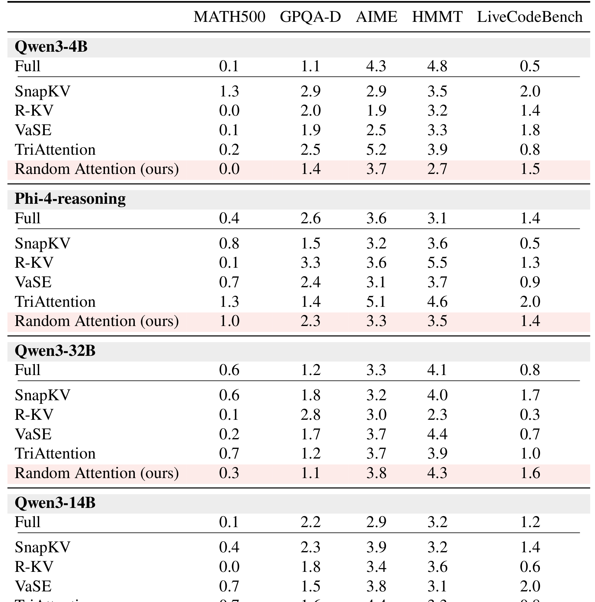
Table 7:Mean generated tokens (thousands) per cell of Tables 1 and 5, measured over every run of the cell; Avg = unweighted mean over the five tasks.
Eviction generally lengthens generation (losing things → re-deriving them), most for the weakest selectors (SnapKV averages 17.0k vs full attention's 12.1k on Qwen3-4B). Random Attention is the shortest-generating evictor on Qwen3-4B and 14B (13.9k / 13.1k average) and within ~5% of the shortest on the others — its accuracy parity is not bought with longer generations. The 32B LiveCodeBench cell (18.4k) is its longest, consistent with the tight code budget.
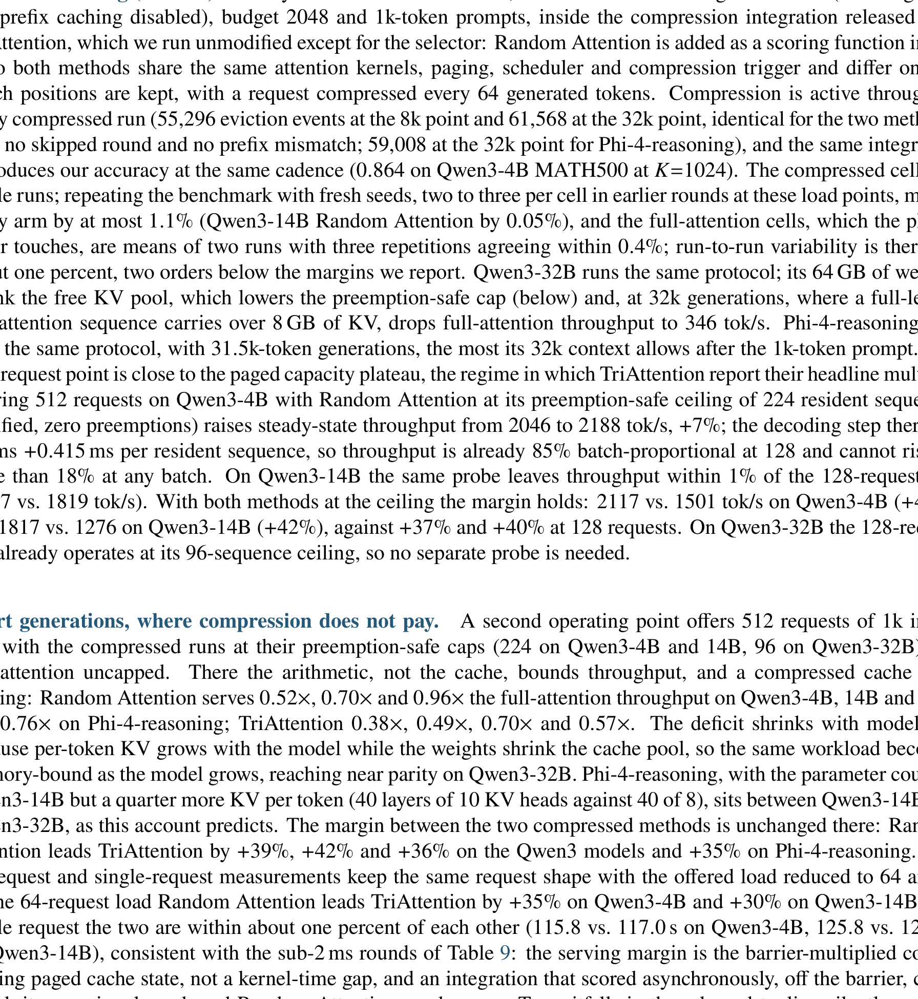
Table 8:Run-to-run variability: standard deviation of per-run accuracy (points) across each cell's independent sampled runs.
Variability by task: at or under ~1 point on MATH500, 1–3 points on GPQA-D and LiveCodeBench, 2–5 points on competition math (AIME has only 30 problems). This is why every claim is decided by the paired, problem-clustered tests rather than raw cell differences — e.g. VaSE's +1.7 AIME edge on 32B against a ±5-point σ is noise. MATH500 cells have R=2 runs, so their σ is a two-sample estimate.
Hardware: accuracy generation on a mixed fleet of H200 nodes; every efficiency measurement H200-only, one job per GPU, nothing else on the node. All cells graded at the 32k limit by the final boxed answer (LiveCodeBench by test execution); no partially completed cell enters any table.
08 · Commentary
Commentary: strengths and limits
What is worth learning
The null-hypothesis move. "Random" is promoted from a passive baseline to an active null: a signal that cannot beat it at matched budget extracts no usable information. The argument structure transfers to any heuristic-stacking field.
Experimental discipline. Matched budget, matched prompt protection, paired problem-clustered bootstrap + sign tests. The "default prompt handling" column in §2 is the key to spotting the confound — before comparing across papers, ask what each one protects.
A complete attribution chain. Rule experiment (gaps vanish) → probe experiment (redundancy quantified: single heads 0.03 → all eight 0.99, superadditive) → boundary experiment (the passcode: each signal retrieves exactly per its statistic). The conclusion is not "random is fine" but "why random is fine, and where it is not."
Systems work done properly. Throughput claims decompose to "15 ms whole-batch wait per compression vs <1 ms", with honest recording of two benchmarking pitfalls and of which TriAttention implementation each comparison uses.
Boundaries and caveats
Code remains the soft spot. Pinning whole prompts wastes budget when prompts are long (up to half of K); TriAttention's small code wins at 14B/32B are the only significant baseline victories in the grid. Compressing scaffolding instead of pinning it is the obvious next step — but then the method is no longer tune-free.
Once-stated facts genuinely lose. 0.000 vs R-KV's 0.836 in the passcode test is not a small gap; accumulated-attention scoring has real value on needle workloads. If your workload declares things once, never restates them, and uses them far away (legal clauses? code dependencies?), random eviction is not for you.
Eviction only. Sparse-attention selection (saves compute, not memory) and quantization (keeps everything at lower precision) are orthogonal; the conclusions do not transfer to them.
Bound to reasoning-trace corpora. The mechanism (restatement + cross-head copies) is richest in long chains of thought; long-input/short-output working states are thin, and the paper is explicit about the distinction.
Concurrent work and implications
Independent lines assemble the same picture: Prefix Sliding keeps the prompt plus a recent window (the recency+prompt row that lands within two points of the best baseline here); Garcia (2026) finds scoring second-order once prompt boundaries are guarded in globally capped long-context QA; Wang (2026) proves random caches must lose pointer-chasing when nothing is redundant — and this paper's empirical finding (two-level redundancy in reasoning traces) is precisely the real-world condition that evades that lower bound. For future work: move eviction research from better scores to better protection (prompt budgeting for long prompts, content-dependent preservation of rare once-stated facts), and treat "beat Random Attention at matched budget and matched prompt protection" as the acceptance test for any new selection signal. For practitioners serving reasoning models under a memory budget, Random Attention is a reasonable default — no calibration, no tuning, no scoring pass, fastest at equal accuracy.
Glossary
Glossary
Hover any dotted-underlined abbreviation in the text, or consult the table.
Reading glossary (abbreviations with dotted underlines are hoverable in the text)
Term
Meaning
One-line explanation
KV cache
Key-Value Cache
Cached history key-value pairs; grows linearly with generation, the bottleneck here
eviction
KV cache eviction
Permanently discarding pairs once the cache exceeds a budget; memory-bounded but irrecoverable
K / r
budget / buffer
Per-head persistent KV budget K; the r most recent positions, never scored
prefill / ℓp
—
Everything injected before generation (system prompt + template + question); pinned by Random Attention
working state
—
Intermediates the trace writes and rewrites; protected by two-level redundancy (text restatement + per-head copies)
attention sink
—
Early positions that consistently receive high attention; StreamingLLM-style methods keep only these by default
top-K keep-set
St
The K positions each head retains after an eviction round; decisions are per layer and per KV head
KV head / GQA
Grouped-Query Attention
Query groups share KV heads; a group shares its head's keep-set
planted-fact probe
—
Inserting a synthetic fact into real traces and controlling which heads keep it, to measure cross-head redundancy
Retr. / R
Retrieval / graded Recall
Greedy-decode reproduction rate; and Eq. 4 recall where 1 = as good as never evicted, 0 = worthless
passcode test
—
Announce a passcode once, ask 57 compression rounds later: the regime where selection signals are irreplaceable
slot coverage / prompt survival
keep-log metrics
Fraction of candidates kept by ≥1 head / fraction of prompt positions still held; the quantitative basis of §5
shared draw
—
Ablation where all heads share one random keep-set; costs only 0.3 points on real MATH500 traces
implicit age bias
—
Survival over n evictions ≈ 0.94n: random eviction is a soft recency window plus a per-head tail
preemption
vLLM preemption
Requests silently evicted when the KV pool is oversubscribed; compression state does not survive it, hence concurrency caps
barrier
synchronisation point
Where vLLM runs compressions, between batched steps — the whole batch waits while one request is compressed
vLLM / PagedAttention
—
Paged serving runtime; block tables make content-dependent scoring require extra passes over paged state
FlashAttention-2
—
Fused attention kernels that never materialise attention weights, forcing weight-reading scorers to recompute
clustered bootstrap / sign test
—
The paper's dual significance gate: paired, problem-clustered percentile bootstrap 95% CI plus an exact sign test